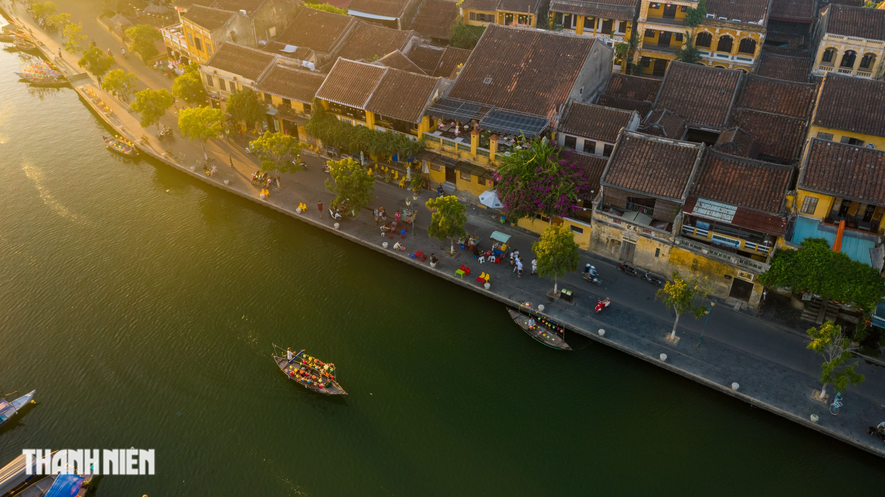

Du khách Úc 14 lần khám phá Việt Nam viết gì về điểm đến này?
Thứ hai, 14/08/2023, 09:01 (GMT+7)
Ronan O'Connell từng 14 lần du lịch Việt Nam, sau chuyến đi mới nhất vào tháng 3 vừa qua, anh đã có bài viết về điểm đến đặc biệt này với du khách quốc tế trên báo Úc Escape. Với dân số 100 triệu người, đất nước châu Á này đang phát triển với tốc độ chóng mặt mà ít quốc gia nào sánh được. Điều này tôi đã nhận thấy vào tháng 3 vừa qua khi đi khắp Việt Nam từ nam ra bắc, từ TP.HCM đến Hội An, Đà Nẵng, Huế và Hà Nội. Đây là chuyến khám phá thứ 14 của tôi tới đất nước này nhưng là lần đầu tiên sau 4 năm. Việt Nam sôi động đến nỗi trong thời gian tôi vắng mặt, ngay cả những địa điểm cổ xưa cũng có những thay đổi, chứ đừng nói gì đến những thành phố ngày càng hiện đại hóa. Những đô thị nhộn nhịp đến mức, trong vòng một tuần, chúng khiến tôi kiệt sức một cách thoải mái. Để lấy lại sức, tôi kết hợp những chuyến phiêu lưu đô thị với những chuyến du ngoạn về vùng quê yên bình của Việt Nam. Ở đó, tôi trôi dạt dọc theo những con sông, chợp mắt trên những bãi biển mượt mà, đi bộ trên những con đường mòn thanh bình trên núi, chơi ở những sân golf tuyệt vời và lang thang trong rừng rậm có tàn tích của những vương quốc trong lịch sử. Với việc Vietjet mở các chuyến bay thẳng mới đến Việt Nam từ Sydney, Brisbane và Melbourne, cùng với Bamboo Airways (Sydney và Melbourne), tôi cho rằng đây là thời điểm thích hợp để du khách Úc khám phá 5 thành phố tuyệt vời nhất sau đây.
Hiếm có khu phố cổ nào ở Đông Nam Á sánh được với phố cổ Hội An. Là một trong các điểm đến thu hút nhiều khách du lịch nhất của Việt Nam, nhưng không thể phủ nhận phố cổ được UNESCO bảo vệ có những khoảng lặng rất ăn ảnh, đặc biệt vào mỗi buổi tối, khi ánh sáng mặt trời nhường chỗ cho ánh sáng đầy màu sắc của hàng ngàn chiếc đèn lồng giấy. Chúng được treo trên những biệt thự, cửa hiệu và đền, chùa của khu phố, một số có tuổi đời lên đến 400 năm. Nổi bật có chùa Cầu được xây vào thế kỷ 16, chùa Pháp Bảo đa sắc màu và nhà di sản Tấn Ký. Những chiếc đèn lồng mang tính biểu tượng của Hội An là món quà lưu niệm tuyệt vời. Du khách có thể mua chúng tại chợ đêm hoặc tự thiết kế một chiếc trong các buổi hướng dẫn làm đồ thủ công mỹ nghệ…
Giới thiệu
Tell Ur Mom II - Winno ft. Heily「Cukak Remix」/ Audio Lyrics Video
Follow Me

Liên hệ
Điện thoại: 0987654321
Email: web1013@dinhnt.com